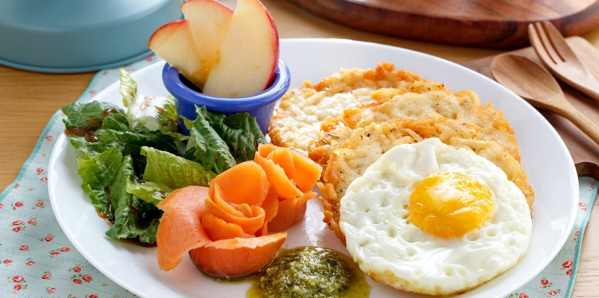

Recetas de Desayunos
2021.06.26 18:24
es Sugerencias
ES - Español
EN - English También te puede interesar Publicidad Subir una receta Regístrate Descarga la APP
kiwilimón® ©2021 Enlaces útiles Blog Recetas Tips Temporadas Quizzes Mapa del Sitio La Compañía Aviso de Privacidad Políticas de Uso del Sitio Web Anúnciate Contacto